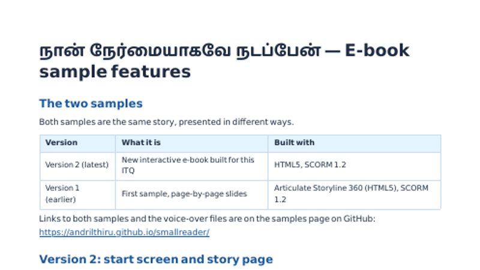

Tamil Interactive Small Readers — Samples
தமிழ்ச் சிறுவர் கதைநூல்கள் · Primary 3 · SCORM 1.2 for SLS
Sample Reader (HTML)
Story: நான் நேர்மையாகவே நடப்பேன். Play it online, or download the SCORM package to upload to SLS.

Version 2 Latest

Version 1 Earlier
Feature Document
A short, illustrated guide to the features of both versions, with planned enhancements.

Voice-over Samples
Local voice talents for narration and characters. Play here, or download.
Voice-over samples will appear here.